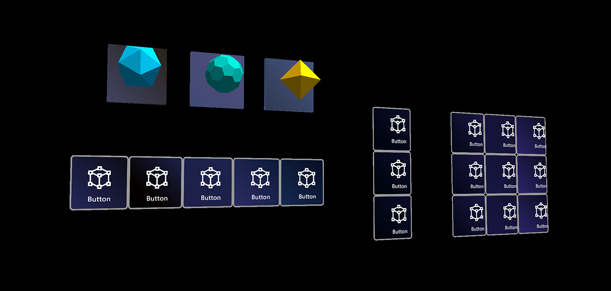
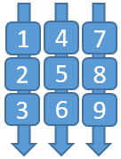

对象集合 Object collection

Object collection是一个脚本，用于帮助以预定义的三维形状布局对象数组。它支持各种表面样式，包括平面、圆柱、球体和径向。因为它支持Unity中的任何对象，它可以用于布局2D和3D对象。
Object collection 脚本
GridObjectCollection支持柱面、平面、球体、放射状表面类型ScatterObjectCollection支持分散样式集合TileGridObjectCollection提供了一些GridObjectCollection的附加选项 注意: TileGridObjectCollection无法扩展GridObjectCollection, 并有几个错误(见[ issue 6237). 因此，建议使用GridObjectCollection.
| Grid Object Collection - Cylinder | Grid Object Collection - Sphere |
|---|---|
| Grid Object Collection - Radial | Grid Object Collection - Plane |
| Scattered Object Collection | Tile Grid Object Collection |
如何使用 object collection
创建一个空的GameObject，并分配一个 Object Collection脚本给它。任何对象都可以添加为GameObject的子对象。添加完子对象后，单击inspector面板中的Update Collection按钮来生成对象集合。对象将根据集合参数在场景中进行布局。也可以通过代码访问更新集合。
GridObjectCollection 内容对齐
GridObjectCollection中的内容可以对齐，以便父对象锚定在集合的顶部/中间/底部和左侧/中间/右侧。使用anchor 属性指定内容对齐方式。
GridObjectCollection 布局顺序
使用Layout字段指定子元素排列的行/列顺序:
Column Then Row — 子元素首先被水平(按列)布局，然后是垂直(按行)布局。使用Num Columns(或代码中的Columns属性)指定网格中的列数。
Row Then Column — 子元素首先垂直(按行)布局，然后水平(按列)布局。使用Num Rows(或代码中的Rows属性)指定网格中的行数。

Horizontal - 子元素只使用列布局在单行中
Vertical -子元素只使用行布局在单个列中。
Object collection 示例
ObjectCollectionExamples.unity示例场景包含各种对象集合类型的示例。
元素周期表是一个演示对象集合如何工作的示例应用程序。它使用对象集合来将3D元素框布局成不同的形状。
Object collection 类型
3D 对象
对象集合可用于布局导入的3D对象。下面的示例展示了使用集合的3D椅子模型对象的平面和圆柱形布局。
2D 对象
对象集合也可以从2D图像装箱。例如，可以将多个图像以网格样式放置。